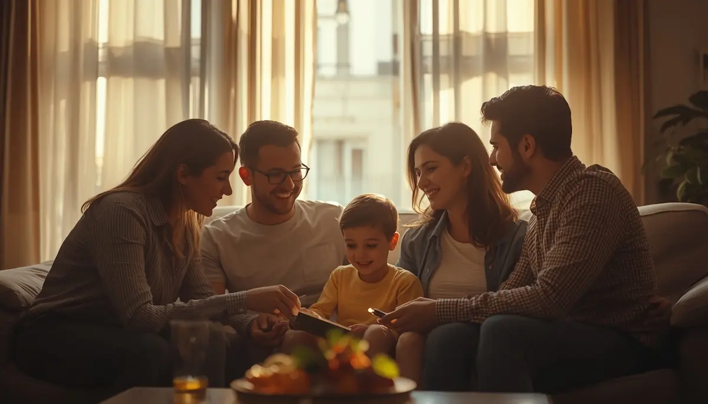

El impacto en la familia y hermanos
La gestión de los cuidados médicos y logísticos involucra de lleno a todos los miembros que conviven bajo el mismo techo. El equilibrio del hogar se tambalea si todo el foco recae de forma exclusiva en la enfermedad, descuidando el bienestar colectivo.
Atención y espacio para los hermanos
Los hermanos de niños con necesidades complejas experimentan a menudo un carrusel de emociones complejas (protección, celos, miedos o culpa). Dedicarles tiempo individual, escuchar sus inquietudes y validar sus sentimientos previene carencias afectivas.
"Cuidar de la dinámica familiar implica reconocer que los hermanos también necesitan su propio espacio de atención, escucha y normalidad bajo el mismo techo."
Un equipo familiar unificado
Fomentar la complicidad y repartir los espacios de atención convierte los retos diarios en una tarea colaborativa. La resiliencia familiar se fortalece cuando todos reman juntos con comunicación abierta y afecto incondicional.
➔ Volver al índice de enfermedades raras